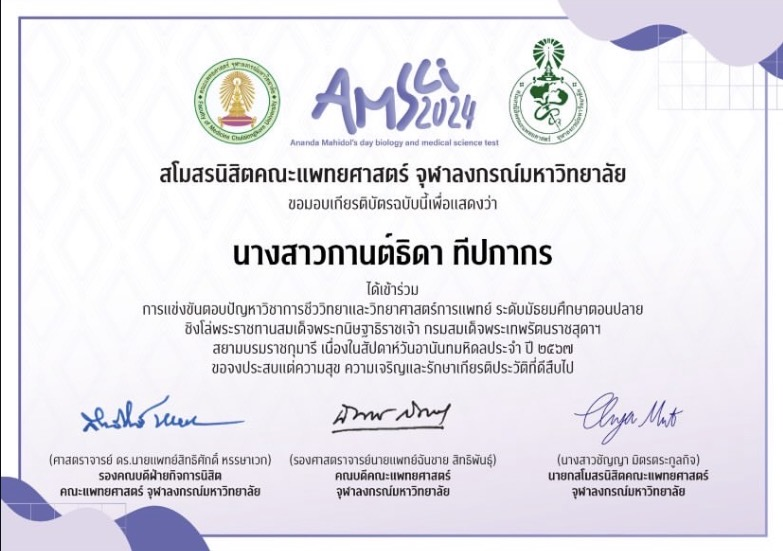
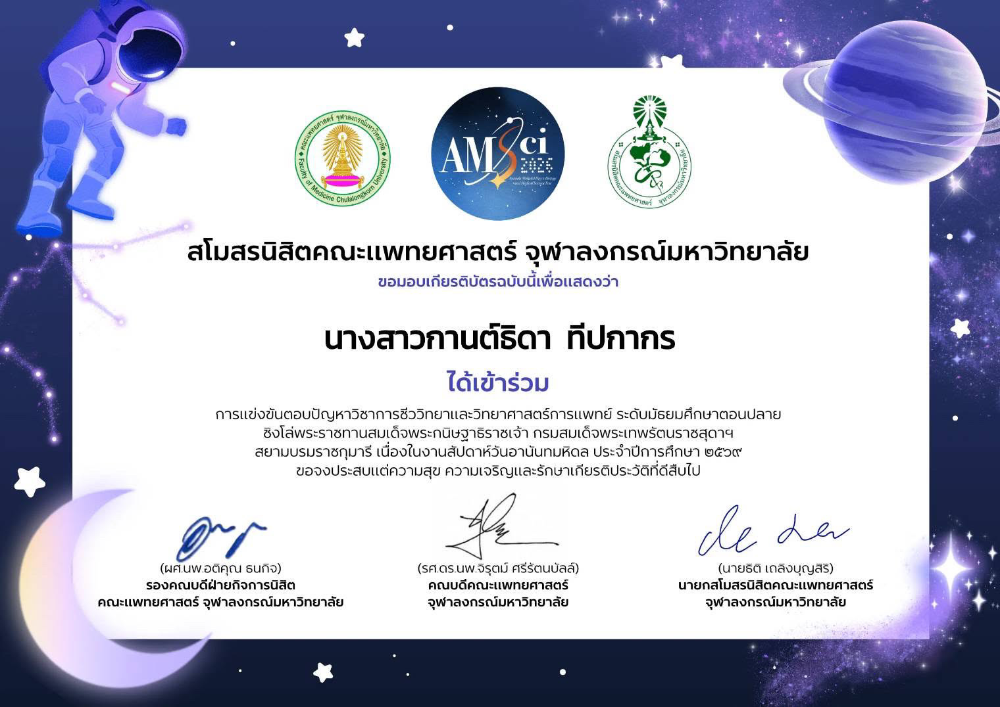
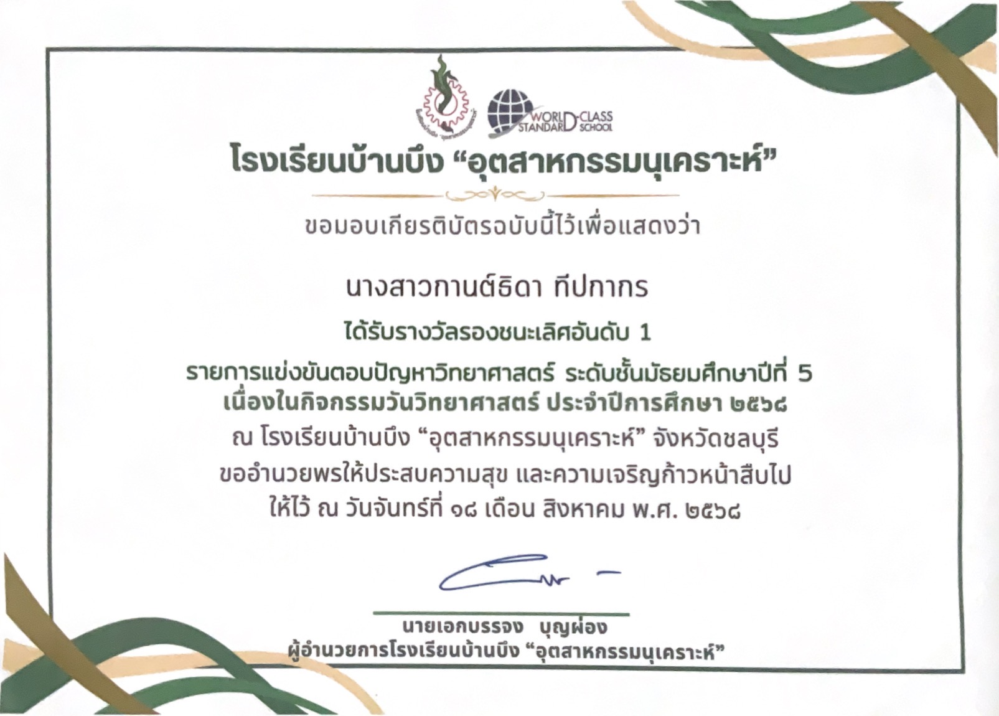
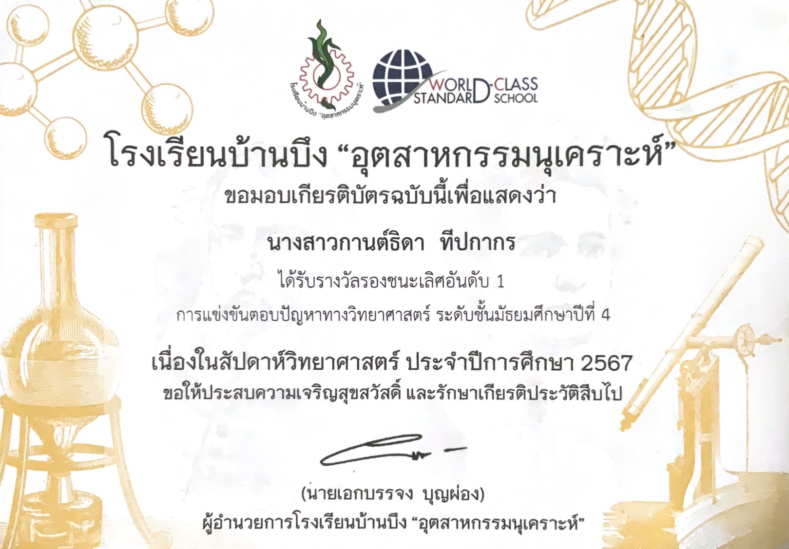

🐰 My Works 🐰
ผลงานและประสบการณ์ที่ภาคภูมิใจ 💜
✦ การแข่งขันคิดเลขเร็ว
เข้าร่วมการแข่งขันคิดเลขเร็ว ระดับมัธยมศึกษาตอนปลาย เนื่องในสัปดาห์คณิตศาสตร์สู่ความเป็นเลิศ ได้ฝึกความรวดเร็วและความแม่นยำในการคิดคำนวณ

✦ การแข่งขันอัจฉริยภาพทางคณิตศาสตร์
เข้าร่วมการแข่งขันอัจฉริยภาพทางคณิตศาสตร์ ได้ฝึกการคิดวิเคราะห์และการแก้โจทย์ปัญหาทางคณิตศาสตร์

✦ การแข่งขันตอบปัญหาชีววิทยาและวิทยาศาสตร์การแพทย์
เข้าร่วมการแข่งขันตอบปัญหาวิชาการชีววิทยาและวิทยาศาสตร์การแพทย์ ระดับมัธยมศึกษาตอนปลาย จัดโดยสโมสรนิสิตคณะแพทยศาสตร์ จุฬาลงกรณ์มหาวิทยาลัย


✦ การแข่งขันตอบปัญหาทางวิทยาศาสตร์
ได้รับรางวัลรองชนะเลิศอันดับ 1 จากการแข่งขันตอบปัญหาทางวิทยาศาสตร์ ได้ฝึกการคิดวิเคราะห์ การใช้เหตุผล และการทำงานภายใต้เวลาที่กำหนด

